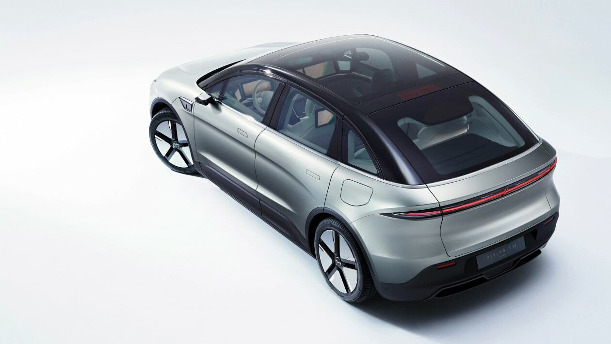
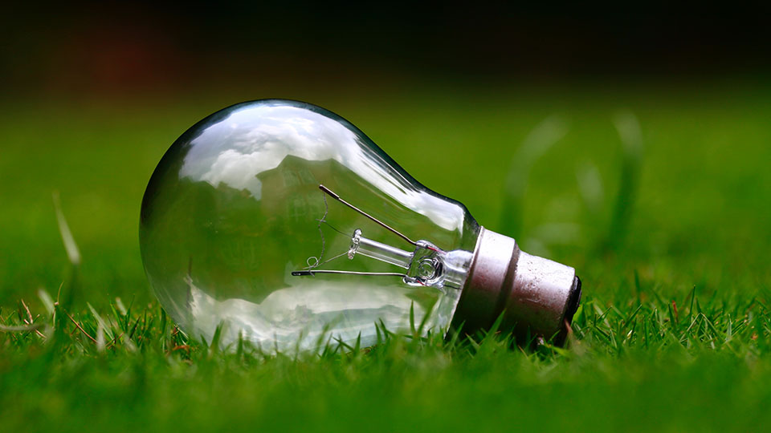
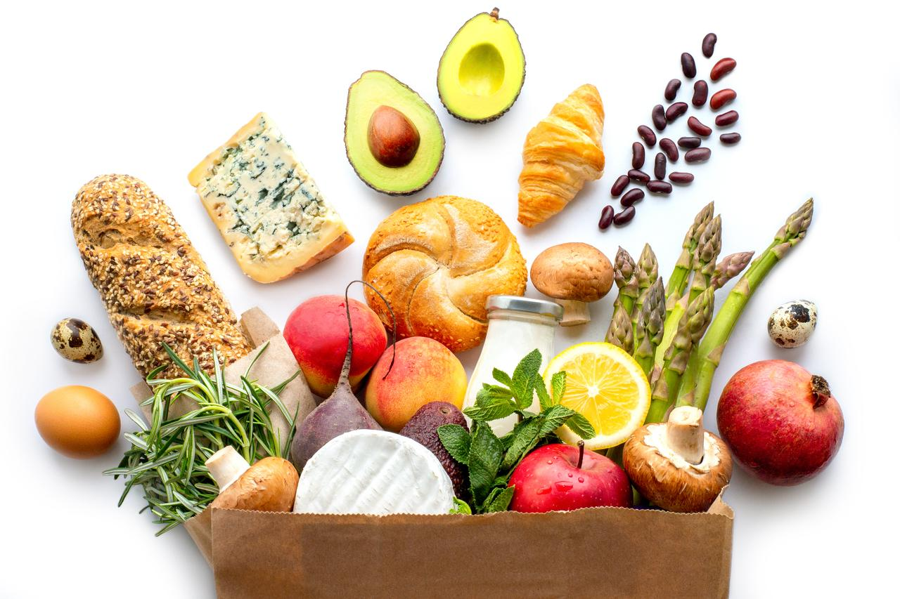
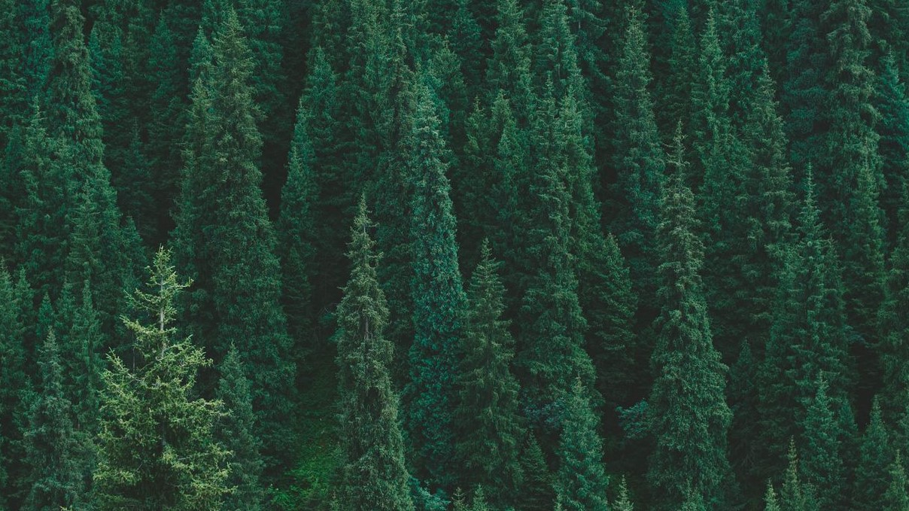
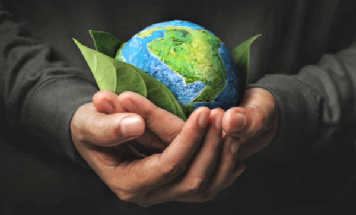

Для борьбы с глобальным потеплением необходимо принять следующие меры:
1. Улучшайте ваш транспорт
На долю транспорта приходится около четверти всех выбросов парниковых газов, поэтому многие правительства мира проводят политику сокращения выбросов углекислого газа. Вы можете начать с того, что оставите машину дома и, по возможности, будете передвигаться пешком или на велосипеде. Для слишком больших расстояний выбирайте общественный транспорт, отдав предпочтение электротранспорту. Если вам необходимо куда-то поехать, предложите другим совместный проезд, чтобы на дорогах было меньше автомобилей. Опередите события и купите электромобиль. Сократите перелеты на дальние расстояния.
2. Сокращайте электропотребление
Если это возможно, выбирайте поставщика энергии, который добывает ее из возобновляемых источников энергии, или достигшего углеродной нейтральности. Установите на крыше дома солнечные панели. Будьте бережливы и по возможности убавьте отопление на пару градусов. Выключайте неиспользуемые приборы и освещение, а лучше всего сразу купите энергоэффективные приборы. Изолируйте чердак или крышу: зимой вы будете в тепле, а летом – в прохладе и сэкономите средства.
3. Берегите продукты питания
Одна треть всего произведенного продовольствия портится или выбрасывается. Человечество ежегодно выбрасывает один миллиард тонн продовольствия, что является причиной около 8-10 процентов глобальных выбросов парниковых газов. Берегите продукты питания, покупая только самое необходимое. Используйте все съедобные части купленного продукта, правильно храните готовую еду, творчески используйте остатки, делитесь избытком с друзьями и соседями и поддержите местную систему совместного использования продуктов питания. Компостируйте очистки и остатки для удобрения вашего сада.
4. Сажайте деревья
Ежегодно уничтожается примерно 12 миллионов гектаров лесов, при этом вырубка лесов вместе с сельским хозяйством и другими формами землепользования несут ответственность примерно за 25 процентов мировых выбросов парниковых газов. Нам всем под силу остановить и обратить вспять эту тенденцию, сажая деревья как в одиночку, так и коллективно. Например, инициатива «Сажай деревья ради планеты» дает людям возможность проспонсировать посадку деревьев по всему миру.
5. Сфокусируйтесь на дружественных для планеты инвестициях
Каждый человек может поддержать перемены с помощью своих сбережений и инвестиций, выбирая те финансовые институты, которые не инвестируют в загрязняющие атмосферу углеродным газом отрасли. Это дает четкий сигнал рынку, и уже многие финансовые институты предлагают более этичные инвестиции, что позволяет вам использовать ваши деньги для поддержки проектов, в которые вы верите, и избегать те, которым вы не верите. Вы можете узнать в вашем финансовом институте об ответственной банковской политике, а также о том, какое место они занимают в независимых исследованиях.
